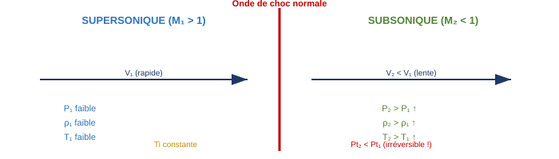
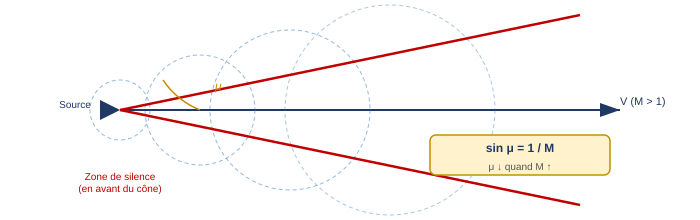
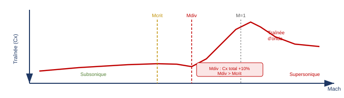
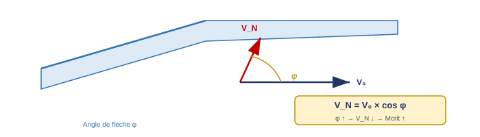
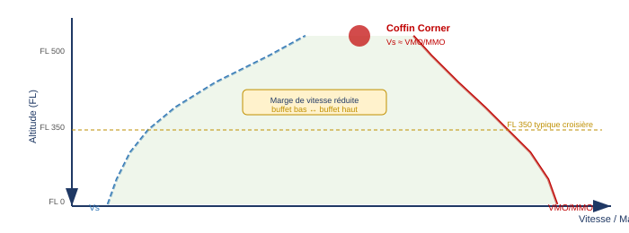

1. Nombre de Mach
1.1 Vitesse du son
La vitesse du son dans un gaz est la vitesse à laquelle se propagent les petites perturbations de pression (ondes sonores). Elle dépend uniquement de la température statique de l'air :
γ = 1,4 (rapport des capacités calorifiques de l'air) · R = 287 J/(kg·K) (constante des gaz parfaits) · T = température statique en Kelvin
En ISA au niveau de la mer : a = 340 m/s = 661 kt
La vitesse du son diminue avec l'altitude (la température diminue dans la troposphère). Elle devient constante à partir de la tropopause (T constante ≈ −56,5 °C dans l'ISA standard).
1.2 Définition du nombre de Mach
Le nombre de Mach est le rapport entre la vitesse vraie (TAS) de l'avion et la vitesse locale du son :
TAS = True Air Speed · a = vitesse locale du son (dépend de T)
À FL constant et IAS constant : M est indépendant de la température (car TAS et a varient dans le même sens avec T)
1.3 Profil de montée / descente
Les avions de transport volent selon deux phases distinctes concernant la limite de vitesse :
- Montée : on limite d'abord l'IAS (VMO), puis à partir d'une certaine altitude (≈ FL280–320 selon l'avion), on bascule sur la limitation en Mach (MMO). La vitesse de transition correspond à l'altitude où le Mach atteint MMO alors que l'IAS est encore à VMO.
- Descente : on suit d'abord la limitation en Mach (MMO), puis on bascule sur la limitation en IAS (VMO) en descendant.
À l'altitude de transition (≈ 36 000 ft en ISA standard), IAS diminue à Mach constant car la TAS reste constante mais la densité baisse. MMO typique sur avion de transport : M 0,82–0,86.
2. Compressibilité et régimes de vol
2.1 Subdivision des régimes aérodynamiques
La compressibilité de l'air devient significative à partir d'environ M 0,3–0,4. On distingue quatre régimes :
- Low subsonic (M < 0,3) : écoulement incompressible, les équations classiques de Bernoulli s'appliquent sans correction
- High subsonic (M 0,3–Mcrit) : écoulement compressible, les effets de densité doivent être pris en compte (facteur de Prandtl-Glauert)
- Transsonique (Mcrit–M 1,2) : coexistence d'écoulements subsoniques et supersoniques sur le même profil. C'est le régime de croisière des avions de transport modernes.
- Supersonique (M > 1,2) : tout l'écoulement est supersonique autour de l'avion
2.2 Comportement dans les tuyères (convergent / divergent)
Le comportement des fluides dans les tuyères est inversé entre le régime subsonique et supersonique :
| Tuyère | Subsonique | Supersonique |
|---|---|---|
| Convergente | V ↑, P ↓, T ↓ (Venturi classique) | V ↓, P ↑, T ↑ |
| Divergente | V ↓, P ↑, T ↑ | V ↑, P ↓, T ↓ |
3. Onde de choc
3.1 Définition et formation
Une onde de choc se forme chaque fois que l'écoulement supersonique doit changer de direction ou de magnitude. C'est une zone de recompression extrêmement mince (quelques libres parcours moyens) et discontinue où les grandeurs thermodynamiques varient brutalement.
Propriétés fondamentales d'une onde de choc :
- Recompression soudaine : P, ρ, T augmentent instantanément
- Processus irréversible : la pression totale Pt diminue (entropie augmente) → perte d'énergie
- Température totale Ti conservée (transformation adiabatique)
- Si l'incidence augmente : l'onde de choc s'intensifie et se déplace vers l'avant
3.2 Onde de choc normale
L'onde de choc normale est perpendiculaire à la direction de l'écoulement. Elle convertit un flux supersonique en flux subsonique en un seul passage :

- P statique ↑, ρ ↑, T statique ↑
- Vitesse V ↓ (passage de M > 1 à M < 1)
- Ti (température totale) = constante
- Pt (pression totale) ↓ → irréversible, perte d'énergie
Sur un profil en régime transsonique, l'onde de choc normale se forme sur l'extrados quand l'écoulement local devient supersonique. À son pied, l'onde de choc interagit avec la couche limite, pouvant provoquer un décollement de la couche limite → buffet.
4. Écoulement transsonique
4.1 Mach critique (Mcrit)
Le Mach critique (Mcrit) est le nombre de Mach de l'avion à partir duquel l'écoulement local sur le profil atteint Mach 1 pour la première fois. L'écoulement local est toujours plus rapide que l'écoulement libre (effet Venturi du profil), donc Mcrit < 1.
4.2 Évolution de l'écoulement de Mcrit à M = 1
L'évolution de l'écoulement autour du profil à mesure que le Mach augmente au-delà de Mcrit suit une séquence caractéristique :
| Mach avion | Situation sur le profil |
|---|---|
| M < Mcrit | Tout l'écoulement subsonique. Pas d'onde de choc. |
| M = Mcrit | Premier point à M = 1 localement (sommet extrados). Pas encore d'onde de choc. |
| Mcrit < M < 1 | Zone supersonique croissante sur l'extrados, terminée par une onde de choc normale. L'onde de choc se déplace vers le bord de fuite à mesure que M augmente. Décollement possible au pied du choc → buffet. |
| M ≈ 1 | Onde de choc sur extrados ET intrados. Forte traînée d'onde. |
| M > 1 (supersonique) | Onde de choc détachée devant le nez (bow shock), puis attachée si profil adapté. |
5. Cône de Mach
En régime supersonique, une source sonore (ou l'avion lui-même) génère des ondes qui ne peuvent pas se propager vers l'avant car l'avion se déplace plus vite que le son. Ces ondes forment un cône de Mach dont le demi-angle au sommet μ vérifie :
μ est le demi-angle entre l'axe de vol et la tangente au cône. Plus M est grand, plus μ est petit → cône plus fermé (plus pointu).
M = 1,5 → μ ≈ 41,8° · M = 2 → μ = 30° · M = 3 → μ ≈ 19,5°

La zone de silence (zone of silence) est la région en avant du cône où aucun son émis par l'avion ne peut être entendu. Un observateur au sol n'entend le bang supersonique qu'après le passage de l'avion, lorsque le cône le dépasse.
6. Effets du dépassement de Mcrit
6.1 Effet sur la portance
L'évolution du coefficient de portance Cz en fonction du Mach est non-monotone :
- M 0,4 → Mcrit (~0,75) : Cz augmente légèrement (compressibilité → portance supplémentaire)
- Mcrit → M ~0,89 : Cz augmente fortement (zone supersonique locale sur extrados → très basse pression → forte portance). Point maximum ≈ M 0,81
- M 0,89 → M 1,0 : Cz chute brutalement (onde de choc + décollement + destruction de la dépression extrados)
- M > 1,0 : Cz se stabilise à une valeur basse (régime supersonique)
6.2 Effet sur la traînée — Mach de divergence de traînée
La traînée reste quasi-stable jusqu'au Mach de divergence de traînée (Mdiv), défini comme le Mach auquel la traînée totale a augmenté de 10% par rapport à sa valeur subsonique. Mdiv > Mcrit.

Au-delà de Mdiv, la traînée d'onde (wave drag) apparaît brutalement. Elle est liée à la dissipation d'énergie dans les ondes de choc et peut atteindre des valeurs considérables, rendant le vol transsonique très coûteux en carburant.
6.3 Mach tuck (tuck under)
Lorsque le Mach dépasse Mcrit, le centre de poussée (CP) se déplace vers l'arrière (de ¼ de corde vers ½ de corde en supersonique). Ce recul du CP crée un moment piqueur (nose-down) qui tend à faire piquer le nez de l'avion : c'est le Mach tuck ou tuck under.
Ce phénomène est aggravé par la réduction du downwash sur l'empennage horizontal (l'onde de choc perturbe le sillage de la voilure) → moment cabreur de l'empennage réduit.
- CP recule (¼c → ½c) → moment piqueur
- Downwash réduit → moins de portance cabratrice à l'empennage
- Correction : Mach trim (transfert carburant vers l'arrière sur Concorde, ou trim automatique nose-up sur avions modernes)
6.4 Effet sur l'efficacité des gouvernes
Au-delà de Mcrit, les gouvernes opèrent dans un flux transsonique perturbé par les ondes de choc. Plusieurs effets s'en suivent :
- Chaque braquage de gouverne modifie l'AoA local → peut abaisser le Mcrit local de cette surface
- Les gouvernes sont plus minces que les profils porteurs pour avoir un Mcrit plus élevé
- En régime supersonique, les gouvernes classiques perdent en efficacité → on préfère les surfaces tout-mobiles
7. Moyens d'augmenter Mcrit
7.1 Aile en flèche (Swept back wing)
L'aile en flèche est le principal moyen d'augmenter Mcrit sur les avions de transport. Son principe : seule la composante perpendiculaire au bord d'attaque (VN) est « vue » par le profil.

Plus l'angle de flèche φ est grand, plus VN est faible → les effets de compressibilité sur le profil se produisent à un Mach avion plus élevé → Mcrit augmente.
Inconvénients de l'aile en flèche à basse vitesse :
- Cz max réduit (moins de portance pour un même angle d'attaque) → nécessite des hypersustentateurs plus performants
- Décrochage en bout d'aile en premier (tip stall) → moment cabreur (pitch-up) instable, car les ailerons (sur les bouts d'ailes) perdent leur efficacité avant le reste de l'aile
7.2 Forme du profil
Le profil supercritique est conçu spécifiquement pour retarder l'apparition de l'onde de choc et la rendre moins intense. Par rapport à un profil conventionnel :
- Extrados plus plat (accélération du flux plus progressive et plus homogène)
- Bord de fuite plus cambrée (compense la perte de portance de l'extrados aplati)
- Épaisseur relative plus grande (17% vs 12% pour un profil conventionnel)
Résultat : le flux supersonique sur l'extrados se termine par une décélération progressive sans onde de choc nette, ou avec une onde de choc beaucoup plus faible → Mcrit et Mdiv plus élevés, traînée d'onde réduite.
7.3 Générateurs de vortex (Vortex Generators)
Les générateurs de vortex (VG) sont de petites ailettes placées sur l'extrados de la voilure. Leur rôle est d'injecter de l'énergie cinétique dans la couche limite par création de tourbillons longitudinaux qui mélangent l'écoulement rapide de l'extérieur avec la couche limite plus lente.
- À basse vitesse : retardent le décollement de la couche limite → décrochage retardé (Vstall réduite)
- À haute vitesse : au pied de l'onde de choc, renforcent la couche limite pour résister au gradient de pression adverse → onde de choc plus faible, buffet transsonique réduit
7.4 Règle des aires (Area Rule)
La règle des aires de Whitcomb stipule que la section transversale totale de l'avion (fuselage + ailes) doit évoluer de façon aussi progressive que possible le long de l'axe longitudinal. Une variation brutale de section crée une forte traînée d'interférence (onde de choc à la jonction aile/fuselage).
Solution pratique : le fuselage est étranglé (waist) au niveau du raccordement aile/fuselage pour compenser l'ajout de section des ailes → section totale progressive (forme de bouteille de Coca-Cola). Cela réduit significativement la traînée d'onde transsonique.
8. Buffet onset
8.1 Définition et types de buffet
Le buffet est une vibration structurale de l'avion causée par un écoulement décollé (turbulent, instationnaire) frappant des surfaces de la cellule. On distingue deux types :
- Buffet basse vitesse (low speed buffet) : causé par le décrochage aérodynamique à haute incidence. L'écoulement décolle de l'extrados → sillage turbulent frappe l'empennage.
- Buffet haute vitesse (high speed buffet / Mach buffet) : causé par les ondes de choc transsoniques. L'onde de choc interagit avec la couche limite → décollement au pied de l'onde → sillage turbulent frappe l'empennage.
8.2 Diagramme de buffet onset
Le diagramme de buffet onset (buffet onset chart) représente les limites de buffet en fonction du Mach, du FL, du poids et du facteur de charge. Il définit une enveloppe de vol sûre entre les deux limites de buffet.
Paramètres clés du diagramme :
- Axe vertical : FL (Flight Level) ou altitude
- Axe horizontal gauche : Mach number
- Axes droits : CG (%), facteur de charge (n), angle de gîte (bank angle)
- Lecture : pour un poids et un FL donnés, on peut lire les limites basse et haute de Mach sans buffet, ou le facteur de charge maximal sans buffet à un Mach donné
8.3 Coffin Corner
Le coffin corner (coin du cercueil) est l'altitude à laquelle l'enveloppe de vol se referme complètement : la vitesse de buffet basse (Vstall) rejoint la vitesse de buffet haute (MMO). À cette altitude, il n'existe plus aucune vitesse sûre sans risque de buffet ou de décrochage.

Facteurs qui abaissent le coffin corner (le rendent accessible à plus basse altitude, réduisant la marge) :
- Masse élevée : Vstall augmente → la limite basse monte
- Facteur de charge élevé : Vstall augmente en virage
- Turbulences : peuvent provoquer des variations de facteur de charge involontaires
- Altitude élevée : les deux limites se rapprochent naturellement